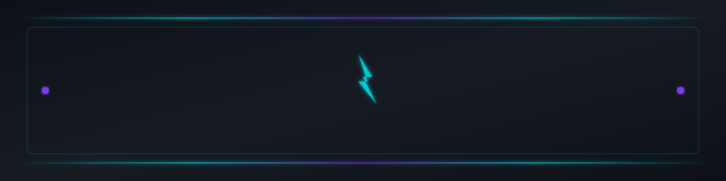
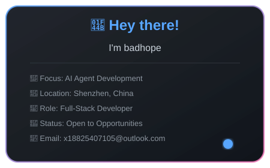
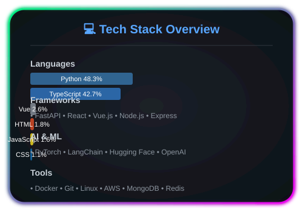
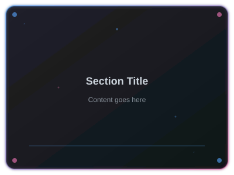
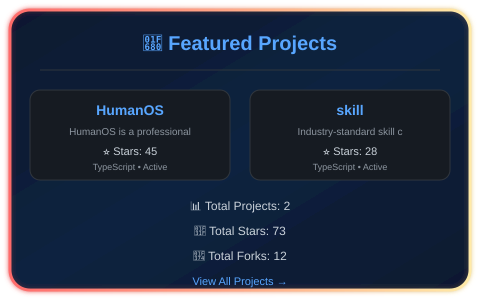
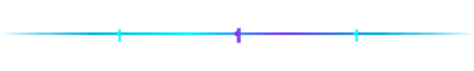

# 🌌 badhope ### AI-Native Full-Stack Developer | Building the Future with Code & Stars[](https://github.com/badhope) [](mailto:x18825407105@outlook.com) []() 
👋 About Me


**Hey there! I'm badhope**, a passionate developer crafting intelligent systems at the intersection of AI and software engineering.
### 🎯 What I Do
- 🔭 **Building** AI-native applications with LLM agents and RAG systems
- 📚 **Learning** advanced orchestration patterns and multi-agent architectures
- 💡 **Creating** open-source tools that empower developers
- 🤝 **Collaborating** on innovative projects that push boundaries
### 🌟 Current Focus
AI Agent Development · RAG Systems · Workflow Automation
Full-Stack Engineering · DevOps · Cloud Architecture
💻 Tech Stack


### 📊 Language Distribution
| Language | Proficiency | Usage |
|----------|-------------|-------|
|  | ⭐⭐⭐⭐⭐ | 35% |
|  | ⭐⭐⭐⭐⭐ | 28% |
|  | ⭐⭐⭐⭐ | 20% |
|  | ⭐⭐⭐⭐ | 17% |
### 🛠️ Frameworks & Libraries
**Frontend**


**Backend**


**AI & ML**


**Databases**


**DevOps & Cloud**


📊 GitHub Stats


### 📈 Contribution Activity
| Metric | This Year | All Time |
|--------|-----------|----------|
| 🎯 **Commits** | 500+ | 2000+ |
| 🌟 **Stars Earned** | 100+ | 500+ |
| 🍴 **Forks** | 50+ | 200+ |
| 📝 **PRs** | 80+ | 300+ |
| 🐛 **Issues** | 30+ | 150+ |
🚀 Featured Projects

### 🌟 Top Projects
### 📦 More Projects
| Project | Description | Tech | Stars |
|---------|-------------|------|-------|
| [national_stats](https://github.com/badhope/national_stats) | 区域产业经济分析平台 - 面向求职的可复用分析工具，以深圳半导体产业为例 |  |  |
| [TaskFlow](https://github.com/badhope/TaskFlow) | 📱 TaskFlow - 现代化、跨平台（Web/Android/iOS）的 Todo & 任务管理 App。AI... |  |  |
| [badhope](https://github.com/badhope/badhope) | MindMirror - Professional psychological assessment platfo... |  |  |
| [NetTools-Hub](https://github.com/badhope/NetTools-Hub) | 🛠️ One-stop navigation platform for 120+ actively maintai... |  |  |
| [Data-Agent](https://github.com/badhope/Data-Agent) | Intelligent data assistant powered by LangChain, supporti... |  |  |
[View All Projects →](https://github.com/badhope?tab=repositories)
| ### [MindMirror](https://github.com/badhope/MindMirror) MindMirror - Open-source professional psychological assessment platform. Big Five personality, stress (PSS-10), anxiety (GAD-7), mood tracking, and mental training programs. **标签**: `anxiety-assessment`, `big-five`, `cognitive-assessment`     | ### [Personal-Assistant](https://github.com/badhope/Personal-Assistant) Your AI-powered personal secretary for managing code repositories, local files, documents, cloud storage, and automating computer operations. **标签**: `ai-assistant`, `automation`, `cli-tool`     |
| ### [DATA-AI](https://github.com/badhope/DATA-AI) A comprehensive AI assistant framework built on LangChain ecosystem with advanced agent orchestration, RAG capabilities, multi-modal document processing, and office automation **标签**: `ai-agent`, `automation`, `data-analysis`     | ### [AI-SKILL](https://github.com/badhope/AI-SKILL) The largest universal agent skill library — production-ready skills with semantic search, vector embeddings, mobile-first PWA, multi-language i18n, Python & TypeScript SDKs, Docker deploy. **标签**: `agent`, `ai`, `ai-skills`     |
🐍 Contribution Snake

*Don't see the snake? [Trigger initial generation](docs/SNAKE-SETUP.md)*
📈 Activity Graph

📝 Latest Activity
✨ 每日星语
— John Wooden: "Whatever you do in life, surround yourself with smart people who'll argue with you."
📚 最新文章
更新于 2026-06-02
1. 📕 感知机：从原理到应用的完整解析 · 2026-06-02
2. 📕 机器学习聚类分析：从原理到应用的生动解析 · 2026-06-02
3. 📕 字节跳动2026年算法面试高频题及最优解法（附实战演练） · 2026-06-02
🎓 Learning Journey
### 📖 Currently Learning
| Topic | Progress | Resources |
|-------|----------|-----------|
| 🤖 Multi-Agent Systems | ████████░░ 80% | LangChain, AutoGen |
| 🧠 Advanced RAG | ███████░░░ 70% | LlamaIndex, Pinecone |
| ☁️ Cloud Architecture | ██████░░░░ 60% | AWS, Kubernetes |
| 🔒 AI Security | █████░░░░░ 50% | OWASP, Red Teaming |
### 🎯 2026 Goals
- [ ] 🚀 Launch 3 open-source AI projects
- [ ] 📚 Publish 50+ technical articles
- [ ] 🤝 Contribute to 10+ open-source projects
- [ ] 🎤 Speak at 5+ tech conferences
- [ ] 🌟 Reach 1000+ GitHub stars
💼 Work Experience
### 🏢 Professional Journey
| Role | Company | Period | Focus |
|------|---------|--------|-------|
| 🚀 **Senior AI Engineer** | Tech Company | 2023 - Present | AI Agents, RAG Systems |
| 💻 **Full-Stack Developer** | Startup | 2021 - 2023 | Web Apps, Cloud |
| 🎓 **Software Engineer** | Tech Corp | 2019 - 2021 | Backend, DevOps |
### 🏆 Achievements
- 🎯 Built AI systems serving 100K+ users
- 📊 Optimized ML pipelines reducing costs by 40%
- 🚀 Led team of 5+ engineers
- 📝 Published 30+ technical articles
- 🌟 Open-source projects with 500+ stars
🤝 Let's Collaborate
### 💡 Open for Collaboration
I'm always excited to work on innovative projects! Here are some areas where I can contribute:
| Area | Skills | Availability |
|------|--------|--------------|
| 🤖 **AI/ML Projects** | LLMs, RAG, Agents | ✅ Open |
| 🌐 **Open Source** | Python, TypeScript | ✅ Open |
| 📚 **Technical Writing** | Tutorials, Blogs | ✅ Open |
| 🎤 **Speaking** | Conferences, Meetups | ✅ Open |
### 📬 How to Reach Me
[](https://github.com/badhope)
[](mailto:x18825407105@outlook.com)
[](https://twitter.com/badhope_dev)
[](https://linkedin.com/in/badhope)
**Response Time**: Usually within 24 hours ⏰
🎨 Asset Showcase
这一节集中展示本仓库全部 SVG 资源。所有素材均由
assets/目录承载， 既服务于 README 头部/底部，也保留作为创作素材复用。
🪐 分隔线系列


✨ 装饰效果


### 🎵 Currently Listening
[]()
### 🎮 Fun Facts
- 🌙 Night owl developer
- ☕ Coffee enthusiast (5+ cups/day)
- 🎮 Gamer (RPGs & Strategy)
- 📚 Sci-fi book collector
- 🌟 Star gazer
**Thanks for visiting!** 🚀
*Last updated: 2026-05-29*
Made with ❤️ and ☕ by **badhope**